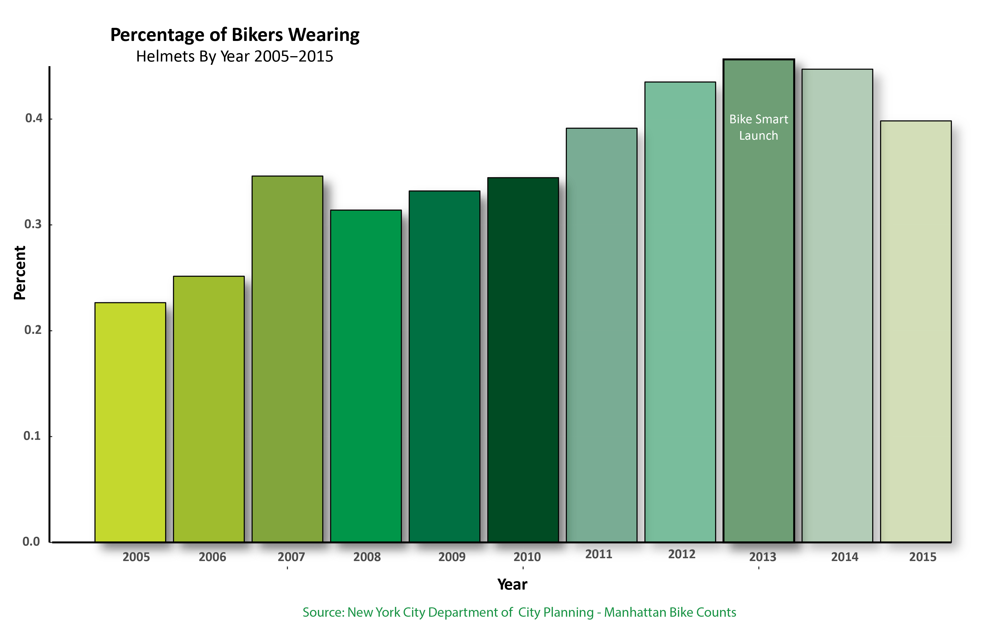

Civic Environmentalism is a collaborative decision making process to generate innovative, non regulatory solutions to a host of environmental problems. Studies show automobile use is a major contributor to climate change, local air pollution, pedestrian injuries and deaths, decline in physical activity and obesity. In addition, using bicycle helmet wearing rates, NYC can also target safety and education in communities. The bike counts data can offer insights into overall trends in user demographics and travel patterns over time.
